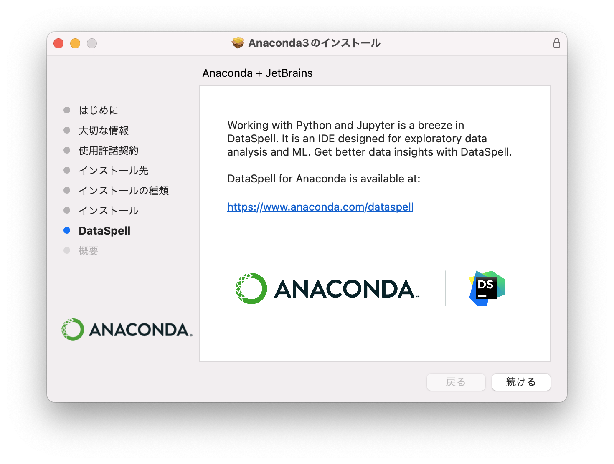
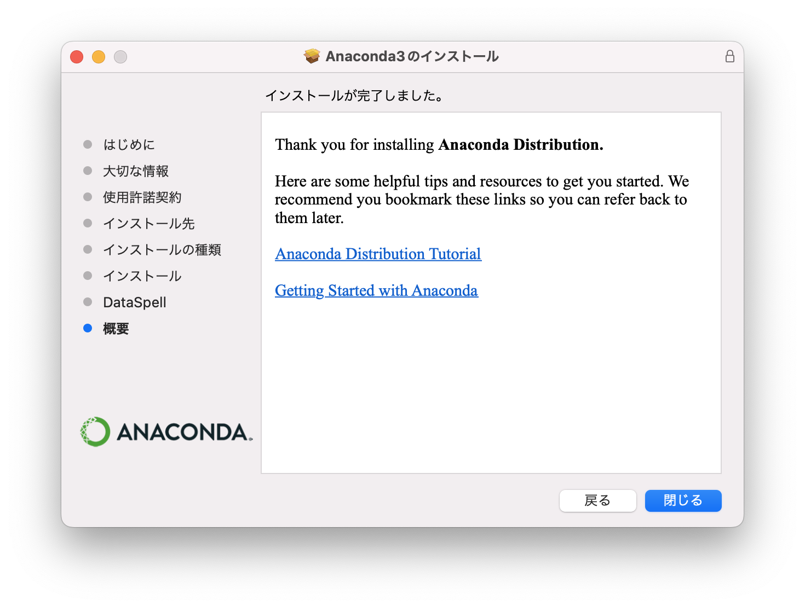

AnacondaによるPythonファイルの実行#
本講義資料はGoogle Colaboratoryで実行することを想定したプログラムになっていますが，例えば，GUIアプリケーションを作成したいときなど，作成する課題によっては .py ファイルによるPythonの実行の方が適している場合があります．ここでは，Anacondaを使ってPythonの環境を構築し，.py 形式のPythonプログラムを実行する手順を紹介します．
注意・補足：
.ipynbで講義を運営していますが，.py形式でPythonプログラムを作成し，実行することが一般的です．今回紹介する Anaconda 以外にもPythonを実行する方法はいくつかあります．Windowsの場合は，Googleで「Windows Python インストール」などで調べるとたくさんの記事がヒットすると思います．自身の好きな方法で環境構築すると良いです．
Anacondaのダウンロード#
Anacondaは複数のPythonの環境を管理するのに便利なツールです．また，講義資料に登場した Numpy や Matplotlib などのパッケージも自動でインストールすることができるので，初学者にとっては最適な環境構築方法だと思います．以降，Macで環境構築をしていきますが，ウインドウの見た目が異なるだけで，Windowsでも大体同じ手順です．もし困ったらSlackにて質問してください．
まずは公式サイト からAnacondaにアクセスしてください（ページは2023年1月のものです）．基本，英語ですがGoogle検索しながらがんばりましょう！ Download ボタンを押すとインストーラがダウンロードされます．このとき，WindowsやLinuxで実行したいときは， Get Additional Installers の各アイコンからダウンロードしましょう．
Anacondaのインストール#
Macなら .pkg ファイル，Windowsなら .exe ファイルがダウンロードされると思います．ダウンロードされたインストーラをダブルクリック等で実行してみてください．以下のようなインストール画面が表示されると思います（この画面はMacのものです）．

ここからは文章に従ってインストールを進めていきます．続けるを押して，大切な情報・使用許諾契約を許可します．進めるとインストール先の選択画面が表示されます．ここは，利用するPCの構成やOSによって変わってきますが，基本的にデフォルトのままでいいです．後からアンインストールもできるので怖がらずやってみてください．
インストールの種類は標準のままでOKです．

インストールをクリックするとAnacondaのインストールが実行されます．インストールが完了すると以下のような画面が出力されますが続けるを押してください．

以下の画面でインストールは終了です．閉じるを押してください．

Pythonファイルの作成#
続いて，実行するためのPythonファイルを作成します．Pythonファイルは拡張子が .pyである必要があります（拡張子がわからなければGoogleで検索してみましょう）．では，メモ帳等なんでも良いのでテキストエディタを開いて以下のPythonコードを記入して保存してみましょう．
今回は例としてテキストエディットというMac版メモ帳で， print('Hello World!') というコードを書いてみました．プログラムのファイル名は main.py という名前にしてみました．このプログラムを任意の場所に保存してください．

ターミナル上でのプログラムの実行#
ここからは，ターミナル（Mac），コマンドプロンプト（Windows），端末（Linux）を開いてください．私のMacのターミナル画面は見た目がデフォルトから変わっていますがやることは同じです．

ここからコマンド操作でプログラムを実行していきます．コマンドはMacとWindowsで異なるので注意してください．（このあたりのコマンド操作は大学入学後に学ぶ機会はあります．コマンドの詳細は説明しませんが失敗しても良いので各自調べながらトライしてみてください！）
まずは保存した main.py の場所まで移動してみましょう．MacもWindowsも cd コマンドでフォルダ移動できるはずです．私はプログラムを python という名前のフォルダに保存したので以下のように実行してみます．また移動できない場合や正しく移動できたかを確認するときは ls コマンド（Windowsの場合は dir コマンド）を使って現在いるフォルダ（カレントフォルダ・カレントディレクトリ）の中身を確認するといいです．

main.py があるフォルダに移動できたことがわかるかと思います．次は，先ほどインストールしたAnacondaのPythonを使ってプログラムを実行してみます．
まずは conda activate base でAnacondaのPython環境に入りましょう．
このような画面になったら python main.py で実行してみてください．

先ほど作成した print 文が実行されていることがわかるかと思います．基本的には，このように任意のテキストエディタでプログラムを作成，ターミナル上でプログラムの実行をすることでプログラミングをしていきます．
注意・補足：
condaコマンドには新たな環境を作ったり，環境を切り替えたり，新しいライブラリをインストールしたりといろいろな機能があります．かなり便利なので調べてみましょう．繰り返しになりますが，実行するOSやツールによって上記の表示は異なります．すべての環境に関する説明を載せるのは大変なので，Google検索や参考書を駆使して調べながらやってみましょう．
テキストエディタのおすすめは VSCode または続くAnaconda-Navigatorで起動できるJupyterLab か PyCharmです．普段，私は VSCode でプログラムを書いています．調べてみると様々な見た目や機能を持つテキストエディタがあるので好みの開発環境を探してみると良いです！
補足：Anaconda-Navigatorの起動#
インストールが完了されると Anaconda-Navigator というアプリケーションが追加されるはずです．このアプリケーションを使うとGUIで新しいPython環境を作成できたり，VSCode・Jupyter Notebook・PyCharmなど高度な開発環境を利用することができます．